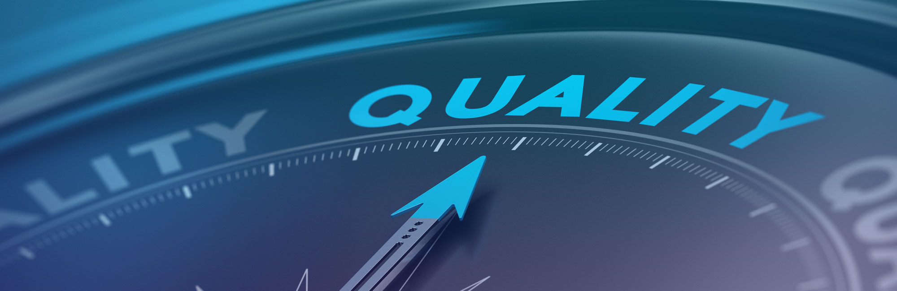

QUALITY SYSTEM

Cégünk 1996 óta működik a tanácsadói piacon, ahol hazai cégeknek nyújt vezetési, szervezési, működési tanácsadási szolgáltatást, aminek keretén belül a különböző jogszabályi, vevői elvárási, üzletetikai elvárásoknak megfelelő dokumentációkat készítünk el.
Ezek köre igen széles spektrumon mozoghat szabályzatokat, előírásokat, felméréseket végezzük el, hogy Megbízóink működése megfeleljen a rájuk vonatkozó jogszabályi- üzleti környezet elvárásainak!
Ennek keretében végzünk felkészítéseket a tanúsítható irányítási szabványok szerint (minőségirányítás, környezetközpontú irányítási rendszer, OHSAS, IBIR, stb), valamint olyan egyedi kéréseknek megfelelően, ahol az adott iparági elvárások, nemzetközi vevői elvárások, vagy közbeszerzési elvárásoknak kell megfelelnie a Partnerünknek. Végzünk EHS felmérést.
Munkatársaink között megtalálható:
Nemzetközi auditorok, kis- és középvállalkozási szakértő, környezetvédelmi szakreferens, munkavédelmi szakmérnök, tűzvédelmi előadó, esélyegyenlőségi tanácsadó, ESG tanácsadó is.
Működésünket úgy alakítottuk ki, hogy mindenkit ki tudjunk szolgálni, így igény szerint bevonunk olyan szakmai tanácsadókat, akik az adott speciális elvárást elégítik ki. A megfelelő szakértő bevonását 26 éves hazai vállalkozói tanácsadói pályánkon kötött szakmai kapcsolatrendszer tesz alkalmassá minket!
Ennek keretében akár tanácsadóként, auditorként, pályázaíróként, projekt menedzserként, majd komplett lebonyolítóként lépünk fel.
Működésünket 1996-ban kezdtük, majd 97-től már pályázatírással is foglalkoztunk, ahol hazai kiíráson, valamint nemzetközi konzorcium EU-s pályázatával is foglalkoztunk. Ezen tapasztalatok elvárások eredményeként több, mint 10 éve együttműködünk 6 egyetem kutatóival, több mérnökiroda, kutatólabor, gépgyártóval, akik alkalmasak részt venni partnereink fejlesztésében, munkáiban.
Szolgáltatásunk mára kiegészült komplett projekt-lebonyolítással, ahol a cég átvilágítását követően a tervezett fejlesztési lehetőségek közül piackutatást követően segítjük kiválasztani a legéletképesebb fejlesztési lehetőségeket, amihez pályázati, banki forrást keresünk, új telephelyet, aminek a fejlesztését, beruházást lemenedzseljük, majd a technológia-gyártó kiválasztását követően a leghatékonyabb, környezetbarátabb, stb szempontoknak megfelelő gyártóüzem kialakításában veszünk részt, majd részt veszünk az új üzemegység, üzletág elindításában. Sikeres komplett lebonyolított projektjeink vannak Veszprém, Somogy és Hajdú-Bihar megyében is. Tanácsadást az ország egészében végzünk, több mint 500 sikeres tanácsadással, akik közül több, mint 120 cég folyamatosan 10 évnél régebben ügyfelünk!
Ezen tapasztalat és tudás birtokában alakítottuk ki üzletmenetünket, aminek keretében a
- A., TANÁCSADÁS,
- B., PÁLYÁZATÍRÁS,
- C., PROJEKT MENEDZSMENT tevékenységeket alakítottuk ki.

A., TANÁCSADÁS keretében:
- Irányítási tanácsadás (tanúsítható ISO rendszerek)
- „ZÖLD” tanácsadás: bővebben itt olvashat róla.
- Vállalatvezetési, szervezési tanácsadás
B., Pályázatírás keretében:
- fejlesztési terv megvalósíthatóság vizsgálata (a pályázónak mi, mekkora fejlesztés áll érdekében, és a jelenlegi helyzetben képes a működése mellett megvalósítani?
- pályázati projekt előkészítés
- pályázatképesség felülvizsgálata, mérlegtanácsadás
- pályázatkeresés / pályázatfigyelés / pályázati pontozás
- pályázatírás
- pályázat lebonyolítás, projektmenedzsment
- fenntartás, lezárás, visszamérés
C., PROJEKT MENEDZSMENT /KOMPLETT ÜZLETÁG fejlesztés
A cég átvilágítását követően a tervezett fejlesztési lehetőségek közül piackutatást követően segítjük kiválasztani a legéletképesebb fejlesztési lehetőségeket, amihez pályázati, banki forrást keresünk, új telephelyet, aminek a fejlesztését, beruházást lemenedzseljük, majd a technológia-gyártó kiválasztását követően a leghatékonyabb, környezetbarátabb, stb szempontoknak megfelelő gyártóüzem kialakításában veszünk részt, majd részt veszünk az új üzemegység, üzletág elindításában. Szervezetbe integrálás.
A gyártandó termékre vonatkozó jogszabályok átvizsgálást követően pl. a CE szabályoknak megfelelő termék engedélyezés intézéstől kezdve a technológusokkal és a gépszállítókkal való egyeztetésen át, az új kollégák felvételének tervezése, képzésüknek, munkakörüknek a tervezése, pályázati támogatási lehetőségekkel megtámogatott új belépők, betanítási költségek optimalizálása, stb. feladatok elvégzése. Új üzem távfelügyelet, automatizálásának, felügyeletének kialakításában szolgáltató kiválasztási tanácsadás. Mellette piackutatás, külkereskedelmi kapcsolatfelvételhez tanácsadás, marketing szolgáltatóval feladatok letárgyalása. Eredmények visszamérése.
A fent leírt 4-6 év komplett felügyelete, koordinálása is része a szolgáltatási csomagunknak! Jelenlegi partnereink az élelmiszeripar, elektronikai gyártás, illetve elektromos járműipari gyártás területéről kerülnek ki!
Vissza a lap tetejére...